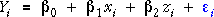
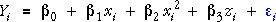
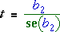
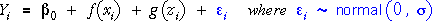

If you don't want to print now,
Linear models with 1 and 2 explanatory variables
We initially described the simple normal linear model,

for i = 1 to n, and then extended it with another term to model the effect of two explanatory variables on the response.

General linear model
These models can be further extended with terms involving additional explanatory variables,
In its general form, this is called a general linear model (GLM).
Least squares
The parameters in a GLM are estimated in a similar way to those in linear models with one and two explanatory variables. We first define the fitted values for the model — the best predictions of the response based on parameter estimates b0, b1, ...
The residuals for the model are the differences between the fitted values and the actual responses,

The good estimates of the parameters should result in fitted values that are close to the actual responses and hence small residuals. An objective way to estimate the parameters is therefore with values b0, b1, ..., that minimise the sum of squared residuals,
The resulting estimates are called least squares estimates of the parameters.
Evaluating the least squares estimates
We explained above how the least squares estimates of the model parameters are defined, but we have not given a formula to evaluate them. For the simple linear model (with a single explanatory variable) there are fairly simple formulae for the least squares estimates,

However when there are 2 explanatory variables, the corresponding formulae for the least squares estimates are unwieldy and they become impractically complex if there are more explanatory variables.
A different approach must be taken to describe the least squares estimates for a GLM with p explanatory variables. The next two pages will show that matrix notation provides a simple formula for the least squares estimates in a GLM.
In practice, it is not necessary to know formulae for the least squares estimates — you can use a computer to evaluate them.
Simple linear model
The key to describing the general linear model and its least squares estimates is the use of matrix notation. We first consider the response mean for a simple linear model (one explanatory variable),
If these n means (for i = 1 to n) are stacked in a column (a vector), they can be collectively expressed as the product of two matrices,

The diagram below highlights the terms that are multiplied together to get the response mean. Click on any row of the X-matrix to see the highlighted values that are used to form the corresponding response mean.
Note how the column of 1's picks out the intercept parameter of the model.
Expressing the complete model with matrices
Having represented the vector of response means as a product of two matrices, it is relatively straightforward to write the complete normal linear model in terms of matrices:
where the εi are independent normally distributed errors. More concisely, we write:

We next show how the linear model for an actual data set is expressed with matrices.
Tensile strength of concrete
The tensile strength of concrete increases while it dries (the curing time). The data below arose from an experiment in which slabs of concrete were allowed to cure for different periods and their tensile strength (kg/cm2) was measured.
| Days curing | Tensile strength | Days curing | Tensile strength | |
|---|---|---|---|---|
| 1 1 1 2 2 2 3 3 3 3 3 |
13.0 13.3 11.8 21.9 24.5 24.7 29.8 28.0 24.1 24.2 26.2 |
7 7 7 7 7 28 28 28 28 28 |
32.4 30.4 34.5 33.1 35.7 41.8 42.6 40.3 35.7 37.3 |
To analyse the data, we may assume that the tensile strengths of the 21 specimens satisfy a normal linear model. The diagram below expresses this model in matrix notation.
Click any row to see the model for that specimen.
Response mean for GLM
The mean response for the i'th observation in a general linear model depends linearly on the values of the explanatory variables, xi , zi , ..., wi ,

We can again use matrices to express the vector of all n response means as the product of two matrices,

Observe that the only differences from the matrix formulation of the simple linear model are extra columns in the X matrix and the corresponding extra entries in the vector of parameters.
The diagram below illustrates this matrix multiplication for a linear model with two explanatory variables for n = 12 observations.
Again click on rows to see the values that are combined in the matrix multiplication to form each mean.
The general linear model
To fully express the general linear model in matrix notation, we add a vector, ε, of independent normally distributed errors,

We now illustrate the matrix formulation of the general linear model with a numerical example.
Water Usage in Production Plant
A production plant cost-control engineer is responsible for cost reduction. One of the costly items in his plant is the amount of water used by the production facilities each month. He decided to investigate water usage by collecting measurements of his plant's water usage and other variables in 17 months.
| Response | ||
|---|---|---|
| Water | Monthly water usage (gallons) | |
| Explanatory variables | ||
| Temperature | Average monthly temperature (°F) | |
| Production | Amount of production (M pounds) | |
| Days | Number of plant operating days in the month | |
| Workers | Number of persons on the monthly plant payroll | |
A reasonable model for the water consumption in month i specifies that it is linearly affected by the four explanatory variables,
This model is expressed below in matrix notation with the actual values of the explanatory variables inserted into the X matrix.
We assume that that observed water usages in the 17 months come from this model.
We next develop the method of least squares using matrices for a general linear model,

Fitted values
Consider a vector of estimates of the p parameters,
Our predictions of the response based on the explanatory variables and these estimates is:
As in the simple linear model, these are called fitted values.
The diagram below shows how this matrix multiplication provides the fitted values for n = 12 observations in a model with two explanatory variables. Click on any row to see how the corresponding fitted value is obtained.
Residual sum of squares
The fitted values are unlikely to be exactly the equal to the actual response values. The differences are called the model residuals.
The sum of squared residuals summarises how close the fitted values are to the response for any vector of parameters, b .
The residual sum of squares can also be expressed in terms of matrices,
Least squares estimates
The least squares estimates of the parameters are given by the vector b that minimises the sum of squared residuals.
The least squares estimates are therefore the solution to a mathematical minimisation problem that is relatively easily specified in terms of matrices — minimising

with respect to b . Note that the vector y and the matrix X contain known values. The solution to this mathematical problem is given by the equation,

Neither the proof nor the matrix equation for b are important for understanding how to use general linear models.
It is however important to observe that:
The same matrix equation provides least squares estimates for all general linear models.
We will also show that inference for all general linear models can be expressed in common terms.
Sale price of grandfather clocks
The selling prices at auction of 32 antique grandfather clocks were recorded, with the ages of the clocks and the number of people who made a bid. The least squares estimates of the parameters are shown in the equation below for the fitted values.

The matrices below shows the matrix equation for the residuals.
Any other values for the three parameter estimates would result in residuals with a greater sum of squares.
Warning
It is important to note that the least squares coefficients associated with the explanatory variables do not describe their overall relationship with the response as displayed in simple scatterplots of the response against the individual explanatory variables.
The least squares coefficient associated with a variable describes the effect of changes to that variable if all other variables are held constant. This is also called the variable's conditional effect on the response.
Body fat
Percentage body fat of individuals is an important measure of their health, but is a difficult quantity to measure. Scientists accurately determined body fat from 252 men using an underwater weighing technique and recorded several other body measurements that were easier to obtain.
| Response |
|---|
| Body fat (percent) |
| Explanatory variables |
| Weight (lbs) |
| Age (yrs) |
| Height (inches) |
| Neck circumference (cm) |
| Chest circumference (cm) |
| Abdomen circumference (cm) |
| Hip circumference (cm) |
| Thigh circumference (cm) |
| Knee circumference (cm) |
| Ankle circumference (cm) |
| Extended biceps circumference (cm) |
| Forearm circumference (cm) |
| Wrist circumference (cm) |
The least squares estimates for a linear model predicting body fat from the other variables results in a prediction equation,
The negative signs of some of these coefficients might be unexpected! These coefficients are estimates of the general linear model parameters and they may not be accurate estimates — we will consider their standard errors in the next page — but this does not totally explain the signs of the coefficients.
Use the pop-up menu in the diagram below to investigate how variables that are positively correlated with body fat can have negative least squares coeffients.
For example, the least squares coefficient of weight in the full model, -0.089, is negative but it is positively correlated with body fat. There is no contradiction here:
The value of the coefficient is interpreted as follows:
| Comparing men with the same other body measurements, each extra pound in weight is predicted to correspond to a decrease of 0.089 percent body fat. |
The other coefficients are interpreted in a similar way. For example,
| Comparing men with the same weight and other body measurements, each extra 1cm in abdomen circumference is predicted to correspond to an increase of 0.886 percent body fat. |
Model
Consider data that come from a general linear model,

in which the errors, εi, are independent and
Estimate of error variance
The general linear model involves a further parameter whose value is unknown and must be estimated — the error standard deviation, σ. To simplify the formulae, we will estimate its square, the error variance, σ2.
The best estimate of σ2 is the residual sum of squares, divided by its degrees of freedom, called the mean residual sum of squares. Its degrees of freedom are the number of observations, n, minus the number of columns of X.

Note that p is the number of explanatory variables plus 1 because of the column of 1's in X.
Body fat
Fitting a general linear model to the body fat data gives the following table of least squares estimates.
The diagram shows the sum of squared residuals from the model and its degrees of freedom (n = 252 observations minus p = 14 estimated parameters in b ). The estimate of the error standard deviation is also given — it is about 4.0 percent body fat.
When estimating a man's percentage body fat from the 13 recorded variables, there is an unavoidable and unpredictable normal error with standard deviation about 4.0 percent body fat.
There is about 95% probability that the error will be within 8 percent body fat.
Standard errors of least squares estimates
As in other situations where a parameter is estimated, it is important to give standard errors for the least squares estimates, b0, b1, ..., of the model parameters. These are needed in order to find confidence intervals for the individual slope parameters and for hypothesis tests about their values.
We will give formulae for these standard errors below, but in practice a computer can be relied on to evaluate them.
Body fat
The computer can obtain standard errors for the parameters of the body fat model. Click the checkbox Show std errors in the table above to see the standard errors of the least squares estimates.
These standard errors describe the accuracy of the least squares estimates.
Formula for variances of least squares estimates (optional)
The matrix below gives the variance-covariance matrix of the least squares estimates.
The diagonal elements of this matrix are the variances of the individual parameter estimates.
(The off-diagonal elements of this matrix are related to the correlations between pairs of parameter estimates — they are often correlated — but we will not use them here.)
Standard errors of least squares estimates (optional)
This formula involves the unknown error variance, σ2. Replacing it with the mean residual sum of squares, we can obtain a numerical estimate of the variance-covariance matrix,
The standard deviations of the least squares coefficients (i.e. their standard errors when we think of them as estimates of the elements of ) are the square roots of the diagonal elements of this matrix.
You will not need to use these matrix formulae yourself — computer software will find the values for you.
It is however important to recognise that:
Parameter estimates and their standard errors can be expressed with the same simple matrix formulae for all general linear models.
Confidence intervals
We showed on the previous page how the standard error for each least squares coefficient can be found. It is easy to translate these estimates and standard errors into 95% confidence intervals.

The t-value is looked up with the same number of degrees of freedom as the residual sum of squares — the number of observations, n, minus the number of parameter in , p.
If the degrees of freedom are high, the 95% CI
is approx
bi ± 2 se(bi)
Hypothesis tests for single parameters
In a similar way, we can perform a hypothesis test for whether individual parameters in the model are zero.

The test asks whether the corresponding explanatory variable can be dropped from the full model.
The test statistic is found by standardising the estimate,

The p-value is the probability of getting a test statistic this far from zero. It is found from the tail area of the t distribution with (n - p) degrees of freedom.
The p-values are interpreted in the usual way as the strength of evidence against the null hypothesis.
Warning
Each of these tests only assesses whether you can drop a single explanatory variable from the full model. After dropping one variable from the full model, the p-values for the other variables will change and they may no longer be unimportant.
If several explanatory variables have high p-values, this does not give evidence that you can simultaneously drop all variables from the model.
When the explanatory variables are correlated with each other (multicollinearity), they may be in some way hold the same information about variability in the response — dropping any one variable may not matter since the others hold the same information, but you should not drop all of them.
This effect was described more fully for linear models with two explanatory variables.
Body fat
The table below shows the least squares estimates and their standard deviations for the body fat data. Since the residual sum of squares has over 200 degrees of freedom, 95% confidence intervals for the individual parameters are approximately (estimate ± 2 s.e.) and are not displayed in the table.
The table does show the t-statistics for testing whether the individual parameters are zero, and the corresponding p-values.
Several p-values are higher than 0.1, giving evidence that these variables could be dropped from the full model. However this does not mean that we could drop all such variables simultaneously.
Only abdomen is highly significant in the full model — all other variables have p-values of 0.01 or higher.
The diagram has a checkbox for each explanatory variable, allowing it to be dropped from the model. The p-value for knee is highest, so click its checkbox to remove it from the model. Observe that the other p-values change.
Continue deleting variables with the highest p-values until all remaining variables have p-values below 0.05. Observe that
In the model with only weight, abdomen, forearm and wrist, all variables have p-values under 0.01 — there is very strong evidence that these variables are important in this model.
Linear and nonlinear models
If there is nonlinearity in the relationship between Y and x, so that the normal linear model with a single explanatory variable,
does not fit, we might try a model with a transformed explanatory variable or response, such as
In terms of the response variable y* = log(y), this is still a 'linear model' — it describes a linear relationship between y* and x . The parameters can be estimated and tested in the same way.
The important characteristic of a simple linear model is not that it is linear in the original explanatory variables, but that:
A simple linear model is linear in the parameters.
Quadratic models
An alternative way to model curvature in the relationship between Y and x is to add a quadratic term to the model,

Although this initially seems to be a different type of model from ordinary linear regression models, it can also be written as a linear model with two explanatory variables,

The model is therefore linear if we treat x2 as a second 'explanatory variable'.
The quadratic model is a general linear model because it is linear in the parameters.
The only difference from ordinary linear models with two explanatory variables is that the two explanatory variables are related quadratically. However since we treat the explanatory variables as constants, this does not affect how the model is fitted or used.
Quadratic models
A nonlinear relationship between Y and x can sometimes be modelled by adding a quadratic term to the simple linear model,

Although the relationship between Y and x is nonlinear,
The quadratic model is also a general linear model because it is linear in the parameters.
We treat the model as a general linear model with two explanatory variables,

The only difference from ordinary linear models with two explanatory variables is that the two explanatory variables are related quadratically. However since we treat them as constants, this does not affect how the model is fitted or used.
Linear representation of the quadratic model
The two variables on the left of the diagram below are related nonlinearly. A quadratic curve is drawn on the diagram and its parameters can be adjusted by dragging the three red arrows.
The 3-dimensional diagram on the right plots y against x and x2. Click the x2-x button to rotate the diagram to see the quadratic relationship between the two 'explanatory variables'.
Click the y-x2-x button. The quadratic model corresponds to a plane on the right. Drag the red arrows on the left again and observe that changes to the model alter the position of this plane.
Now click the y-x button to rotate the 3-dimensional model to show the same scatterplot that is displayed on the left of the diagram and again adjust the quadratic curve.
The linear plane in 3 dimensions corresponds to fitted values that lie on a quadratic curve (the grey line) on the plot of y against x.
Finally, click the checkbox Show residuals and observe that the residuals are the same on both the left and right, then click Least Squares to find the least squares parameter estimates.
Nonlinear regression with polynomials
We now extend quadratic models with extra terms involving higher powers of x.

The extra polynomial terms give considerable flexibility in modelling curvature in the relationship between Y and x. Since the parameters again appear linearly, this model is also a general linear model and all general results about GLMs apply to it.
Cubic model
The diagram below shows the X matrix that corresponds to a cubic model for a single explanatory variable, x.
Click any row to see how the 'linear part' of the model is a cubic in x.
Finding the best degree of polynomials
When using polynomial models, we are interested in using the lowest possible degree of polynomial — the lower the degree of polynomial, the smoother the fitted curve tends to become.
The test for whether the highest-order coefficients of a polynomial model is significantly different from zero can be used to decide whether to use a polynomial with lower degree.
For models of this type, we are interested in using the lowest possible degree of polynomial, but it makes no sense to have any power of x without all lower powers.
Note that it makes no sense to use a polynomial whose highest-order term is xp without including all lower powers in the model.
Do not therefore consider deletion of terms from the polynomial model if a higher-order term is still in the model.
Warning
A polynomial of degree 4 or higher might be found to fit the data best, but you will often find that it behaves in unreasonable ways outside the range of data that were collected. High-degree polynomials should never be used for extrapolation.
Some other form of nonlinear function should always be considered before using high-order polynomials.
For example, consider a nonlinear transformation of either X or Y.
Onion yield
The data below arose from an experiment in Purnong Landing, South Australia involving production of white Spanish onions. The explanatory variable is the density of planting (plants per square metre) and the response is onion yield (grams per plant).
The diagram initially shows a polynomial of degree 0 fitted by least squares to the data — simply the sample mean.
Use the pop-up menu to increase the polynomial degree. As extra polynomial terms are added to the model, the criterion of least squares ensures that the curve becomes closer to the data — the residual sum of squares reduces.
The polynomial is fairly smooth for all degrees up to 5. However observe that the polynomial of degree 5 has a sharp increase for densities over 180 and would be a poor predictor of yield outside the range of the data (densities of 20 to 180).
Traffic fatal crashes in New Zealand
The next data set gives the number of fatal vehicle crashes in New Zealand per 100,000 population between 1970 and 2005.
Again examine how the shape of the least squares curve changes as the polynomial degree increases.
Several of the polynomials seem reasonable descriptions of the changes in fatal vehicle crashes between 1970 and 2005. However none of the polynomials would provide reasonable predictions after 2005.
Examining residuals
As in regression models with a single explanatory variable, we look for problems in multiple regression models with diagnostics that are based on the residuals and leverages of the observations.
When there is only one explanatory variable, X, a scatterplot of Y against X usually shows up any problems with the regression model as effectively as a scatterplot of the residuals against X. However with more explanatory variables,
The residuals remove the effects of all explanatory variable, so plots of residuals against explanatory variables can show information about problems with the model that cannot be seen in plots of the raw data.
Artificial illustration
The diagram below shows an artificial data set that shows clearly how residual plots can highlight problems that are not easy to see in the raw data.
Use the lower pop-up menu to display scatterplots of Y against X and Z. Neither plot gives any clear indication of problems with the fit of the model — both variables seem to be linearly related to Y.
Now use the top pop-up menu to display scatterplots of the residuals against X and Z.
The scatterplot of residuals against Z clearly shows curvature — the model should use a nonlinear function of Z.
To help understand the difference between the plots of Y and the residuals against Z, display a scatterplot of Y against Z and click the checkbox Color crosses.
The colours of the crosses represent X — from red for low X to blue for high X. Y is related to X as well as Z, so there the vertical spread of crosses in the plot of Y against Z is mostly determined by X. When changing to a scatterplot of residuals against Z, the effect of X is removed.
The following example shows the use of residuals for a real data set.
Energy expenditure of bees
In an experiment, an entomologist recorded energy expenditure (joules/sec) for bees drinking water with different sucrose concentrations (%) and at different temperatures. Energy expenditure is the response measurement.
Scatterplots of Energy expenditure against Temperature and Sucrose do not show particular curvature, but the residual plots both give some evidence of nonlinearity in the relationship with both explanatory variables.
'Importance' of the curvature
Scatterplots of residuals against X and Z are useful ways to detect whether a nonlinear function of X or Z should be used in the regression model. But what transformation of X or Z should be used in the model?
The residual plots do not suggest the nature of the curvature or show its importance, relative to the linear relationship.
To help show the nature of the curvature for each variable, partial residual plots (also called a component plus residual plots) are often used. The partial residual plot for X simply adds the linear function of X back onto the residual before plotting against X.
plot (b1xi + ei) against xi
A partial residual plot for Z is similar:
plot (b2zi + ei) against zi
Note that ordinary residual plots should be used to detect whether there is any curvature. Only use partial residual plots after you have discovered that there is some curvature.
(Using a similar definition for simple linear regression with only a single explanatory variable, X, the partial residual plot would be simply a plot of Y against X.)
Artificial illustration
The diagram below again shows the artificial data set from the previous page in which the residual plots indicated nonlinearity in the relationship of Y with Z.
Select Component plus residual from the pop-up menu on the top to display the partial residual plot for X. This simply adds back the linear trend in X.
Repeat for the variable Z.
The partial residual plot suggests that the relationship of Y with Z is flatter at low z-values.
Display a partial residual plot for Z on the right, then click the y-z rotation button to rotate the 3-dimensional scatterplot to plot Y against Z. Now click Rotate to Comp+Resid. The resulting rotation of the 3-dimensional scatterplot removes the linear trend in X and is identical to the partial residual plot on the right.
Explaining curvature with a quadratic term in X
A quadratic term can be added to a simple linear model to explain curvature. In a similar way, if curvature is apparent in a plot of residuals against X in the multiple regression model,

then a quadratic term in X can be added to model the curvature,

This model is also a general linear model since it is linear in the parameters.
Note the following properties of this model:
Flexibility of the model
The diagram below shows an ordinary linear model involving X and Z. It corresponds to a regression plane whose corners can be dragged to position it.
Click the checkbox Quadratic in X to add a quadratic term in X to the model. An extra red arrow is added to the diagram. Dragging these four arrows adjusts all four parameters of the model, showing its ability to model curvature in X.
Interpreting parameters (optional)
The diagram below initially shows a model without curvature — the coefficient of x2 is zero.
Drag the three red arrows on the left (but not the red arrow on the left at this stage). These alter the intercept and two slope parameters of the linear model. As before, the slope parameters describe the increase in Y for a unit increase in x or z.
Now drag the red arrow on the far right to change the coefficient of x2 — the curvature in the model. The grey plane describes the model with the same parameters but zero curvature and the wire-frame plane shows the model with curvature. The coefficient of x2 is the difference between the two planes when x = 1.
Curvature in X and Z
The model can be extended further to explain curvature in both X and Z by adding a further quadratic term in z.

This model is again a general linear model since its parameters appear linearly in the equation.
Flexibility of the model
The diagram below shows the kinds of regression surface that correspond to this class of linear models.
Drag the red arrows to adjust the parameters.
Click the checkboxes Quadratic in X and Quadratic in Z to add quadratic terms in the two explanatory variables to the model, and drag the extra two arrows to investigate the kinds of surface that correspond to this quadratic model.
Residuals
For all general linear models, we can find fitted values. For a model with quadratic terms in x and z, the fitted values are:

The residuals are differences between the observed and fitted values,
Visualising the residuals
In simpler models with one or two linear terms (but no quadratic terms), we showed that the residuals could be represented as vertical lines from the data points to the least squares line or plane.
There is a similar representation of the residuals in the quadratic model — the residuals are vertical lines from the data points to the quadratic surface that represents the model.
Squared residuals and least squares
Least squares minimises the sum of squared residuals,

If these squared residuals are represented as squares in the 3-dimensional scatterplot, the least squares line results in the smallest possible total area for these squares.
Illustration
The scatterplot below shows a data set of 7 response values and the corresponding values of two explanatory variables.
Choose Show as lines from the pop-up menu to display the residuals — they are vertical lines from the data points to the regression surface. Rotate the scatterplot a little with the mouse to get a better idea of where the points lie in 3-dimensions, then drag the five red arrows to adjust the parameters of the model, trying to make the residuals small.
Choose Show as squares from the pop-up menu to display each residual as a square. The total area is the residual sum of squares. Try adjusting the parameters again to make the residual sum of squares (the red area) as small as possible.
It is difficult to minimise the residual sum of squares by hand. However a computer can easily perform the matrix calculations to obtain the least squares estimates.
Click Least squares to show the least squares fit of the model.
Leafing-out time of maples
Are there genetic differences between maple trees that grow in different parts of the USA and Canada? The data set below arose from a study in which batches of seeds were collected from maple trees in different parts of the Eastern USA and Canada. All seeds were germinated in Wooster, Ohio and an index of the leafing-out time of the batches was recorded.
Regression is used to examine whether the mean leafing-out time depends on the latitude (X° North - 30) and mean July temperature (Z° F - 60) of the place of origin of the batches of seeds. A relationship would prove that there is a genetic difference between seeds from the different locations. (Note that we have subtracted 30 from each latitude and 60 from each temperature to make the coefficients smaller. The fit of the models is unchanged.)
Use the checkboxes at the right of the diagram to investigate the fit of different linear and nonlinear models to these data. For each model, the least squares fitted model and corresponding residual sum of squares are displayed.
Note that adding an extra term always reduces the residual sum of squares — each extra term gives additional flexibility allowing the surface to get closer to the crosses.
It rarely makes sense to have a quadratic term in x in the model if there is not already a linear term in x, so the diagram does not allow you to remove a linear term without also removing the corresponding quadratic term.
Hypotheses
We have described a model that can explain some forms of curvature in the relationship between Y and the two explanatory variables, X and Z,

This suggests hypothesis tests for curvature, based on whether the coefficients of the two quadratic terms are zero. For example, testing whether there is curvature in X corresponds to the hypotheses,

Test for curvature
As in other general linear models, this can be tested with a t-test based on the ratio of the least squares estimate of the parameter and its standard error,

(A general formula for the standard error of least squares estimates for the general linear model was given earlier.)
If there is no curvature, this t-statistic has a t distribution with (n - 5) degrees of freedom, so the p-value for the test is the tail area of this distribution.
Most statistical software for fitting linear models gives a table of all parameter estimates, their standard errors, t-ratios and p-values. This table avoids the need to do any calculations by hand.
Energy expenditure of bees
In an experiment, an entomologist recorded energy expenditure (joules/sec) for bees drinking water with different sucrose concentrations (%) and at different temperatures. Energy expenditure is the response measurement.
The table under the data shows all parameter estimates and the associated standard errors, t-ratios, and p-values for the model with quadratic terms in both variables. The only two p-values of interest in this table are those associated with the two quadratic terms. From them, we can conclude that:
Do not try to interpret the p-values associated with the linear terms and the intercept in this table. For example, it makes no sense to test whether the linear coefficient of temperature is zero when there is already a quadratic term in the model. (Remember that the p-values each test whether one coefficient is zero in the full model with all other terms present.)
Assumption of additivity
Both the linear model,
and the quadratic model

are of the general form

In this type of model, the effects of X and Z are additive on Y.
In additive models, the expected response is affected in the same way by changes to x whatever the value of z.
In a similar way, the expected response is affected in the same way by changes to z whatever the value of x. In additive models, we say that there is no interaction between the effects of X and Z. (We will describe models with interaction in the following page.)
When additive models are displayed as a surface in 3 dimensions,
Model that is linear in X and Z
The following model only has linear terms in X and Z.
Click the y-z rotation button and observe that all lines are parallel. At every x-value, the relationship is linear between Y and z with the same slope. The coefficient of x in the model gives the effect of increasing z by 1, whatever the value of x.
Now click the y-x rotation button and note that the lines are again parallel. Increasing x by 1 has the same effect on Y, whatever the value of z.
Quadratic model
The following diagram adds quadratic terms in x and z.
Again click the y-z and y-x buttons and observe that:
The quadratic curves are 'parallel' — they have the same curvatures and slopes.
The parallel curves are a consequence of the additivity of the effects of X and Z in the two models.
Interaction
The effects of two explanatory variables are not always additive. For example, increasing the amount of nitrogen fertiliser (X) may improve the yield of wheat (Y), but only at high temperatures (Z).
In the illustrative diagram above, we have only shown data at two values of Z to show clearly that the increase in yield per unit increase in fertiliser (i.e. the slope for X) is greater at high temperatures (high Z) than at low temperatures (low Z).
Modelling interaction
Interaction between the effects of X and Z can take many forms, but a simple model that is often adequate adds a term involving the product of X and Z to the linear model,

This is again a general linear model since the unknown parameters appear linearly. To help understand the interaction, observe that the model can be rewritten in the form,

When considering how the expected response is affected by changes to X, note that its 'slope' is the red term. Since the red term involves Z, the effect of increasing X by 1 depends on Z.
Flexibility of the model
In the diagram below, the grey plane shows a linear model with no interaction term. The wire-frame surface shows a model with the same coefficients for x and z but also an interaction term.
Drag the red arrow on the right (at x = z = 1) to adjust the coefficient of the interaction term.
When the coefficient of the interaction term is non-zero, click the y-x button and observe that the grid lines are still straight lines, but are no longer parallel. The slope for x is different for different values of z.
Click the y-z button and observe that the grid lines here are also straight but that their slopes depend of x.
Least squares estimation
The model with interaction,

is a general linear model, so it can be fitted by least squares — the parameters of the model are chosen to give the smallest possible value for the sum of squared residuals.
Energy expenditure of bees
In an experiment, an entomologist recorded energy expenditure (joules/sec) for bees drinking water with different sucrose concentrations (%) and at different temperatures.
The diagram initially shows the least squares estimates for the model without interaction. Rotate the diagram to get a feel for the positions of the points in relation to the plane.
Now click the checkbox Interaction and choose Show as squares from the pop-up menu. Drag the four red arrows to make the sum of squared residuals (red area) as small as possible. Finally, click Least squares to see the least squares estimates.
After clicking Least squares, click the y-x rotation button. Observe that the fitted model shows that energy expenditure rises more slowly with temperature at low sucrose levels than at high sucrose levels.
Click the y-z rotation button and observe that energy expenditure rises more slowly as sucrose increases at low temperatures than at high temperatures.
Increasing sucrose and temperature together has a particularly high effect on energy expenditure.
Testing for interaction
In the following model, the interaction is modelled by the term involving the product of x and z.

The test for interaction therefore asks whether the coefficient of this term is zero.
Since the model is a general linear model, the method that was described earlier for testing the parameters of any GLM can be applied to test whether the parameters of this model are zero. Interaction can therefore be tested with a t-test for the interaction term. As in other t-tests, this is based on a t statistic that divides the parameter estimate by its standard error.
Energy expenditure of bees
We will now test whether the interaction between sucrose and temperature that is apparent in the least squares estimates could have arisen by chance.
The table shows the parameter estimates, their standard errors, t-statistics and p-values. The p-values show the strength of evidence for whether the corresponding parameters are non-zero.
The p-value for the interaction term is 0.0013, giving very strong evidence that there is interaction between the effects of sucrose and temperature.
The other p-values should not be interpreted since it does not make sense to drop the linear terms in sucrose or temperature when there is an interaction in the model.
Effect of transformation on the interaction
Consider a response variable, Y, that satisfies a normal model with two explanatory variables X and Z that do not interact in their effect on the mean response.
If a nonlinear function of this response, such as log(Y) or exp(Y), is modelled instead, there is likely to appear to be an interaction.
The appearance of interaction depends on the function of the response that is modelled.
It is therefore important to consider nonlinear transformations of the response as part of the modelling process.
Response variables that are 'quantities' of something are often routinely replaced by their logs before analysis.
Other effects of transforming the response
Note that nonlinear transformations of the response have several different effects on the model:
It is therefore important to look simultaneously for all three problems when deciding on whether a transformation of the response is advisable.
Example with interaction
The diagram below shows a data set for which there is clear evidence of interaction between the effects of the two explanatory variables. The coloured surface represents the least squares fit of the model with interaction.
Observe that the interaction is highly significant.
Transformed response
In this example, the interaction can be completely removed by analysing the logarithms of the response. This nonlinear transformation compresses the top of the response scale and expands the lower end of the scale.
When analysing the log transformation of the response, there is no significant interaction between the effects of X and Z.
Model with curvature and interaction
We have now expanded the linear model,
with quadratic terms to explain curvature and with an interaction term. These can be combined in a model that has both nonlinearity and interaction,

An example illustrates this model.
Energy expenditure of bees
On the previous page, we found that there was strong evidence of interaction between temperature and sucrose on energy expenditure of bees. Much earlier, we also found that there was moderately strong evidence of curvature in the relationship of temperature to energy expenditure, but not of sucrose. The diagram below shows the fit of a model with both interaction and quadratic terms in temperature and sucrose.
In this model, there is still strong evidence of interaction between the effects of temperature and sucrose, and of curvature in the effect of temperature.
Note however that there is now also evidence of nonlinearity in the effect of sucrose — its p-value has reduced from 0.1023 in the earlier model without an interaction term to 0.0243 in this model. There is therefore also moderately strong evidence that the relationship of energy expenditure to sucrose is also nonlinear.
The reason is that the interaction term has explained a considerable amount of the variation in energy expenditure, so the residuals and the estimate of the error standard deviation are much smaller with an interaction term. Since the latter is part of the denominator of all t-ratios, the t-ratios have become bigger and more significant.
The lower the unexplained variation in the response, the greater the chance of detecting explanatory variables (and terms) that have a small effect on the response.
Click the y-x and y-z rotation buttons to help understand the nature of the curvature and interaction in this model.
Problems with all data points
The relationship between a reponse and two explanatory variables is not always described well by the multiple linear regression model,

Some problems relate to the fit of the model to all data points.
Nonlinearity and interaction were investigated in the previous two sections.
Problems with a single data point
Other problems that are specific to a few data points will be investigated in this section.
Diagnostics for outliers, leverage and influence
These problems were investigated earlier for models with a single explanatory variable. The regression diagnostics that are described in this section are extensions of these. They will be further extended later to models with three or more explanatory variables where they are specially important since the raw data cannot be fully examined with scatterplots.
We write the general linear model in the form,

To foreshadow the general linear model with p explanatory variables, we phrase some guidelines for the regression diagnostics in terms of p.
Note that p = 2 for the simple linear model and p = 3 for the regression model with two explanatory variables.
Variability of least squares plane
We showed earlier that the least squares plane is a random quantity — it varies from sample to sample. The position of the least squares plane has greatest variability for (x, z) combinations far from the data and this is particularly pronounced when X and Z are multicollinear.
The variability of predictions from the least squares plane therefore also depends on the (x, z) combination at which the prediction of Y is made:

where rxz is the correlation coefficient between X and Z.
Do not try to remember this formula, but observe that it defines a quadratic surface in x and z and is smallest at the means of X and Z.
Illustration
The left of the diagram below represents a normal linear model with two planes, 2σ above and below the regression plane (which is not shown). The (x, z) values at which data are to be collected are represented by crosses on the x-z plane and as red lines between the two planes.
If response measurements were taken from this model, 95% of them would lie on the red lines (i.e. between the two planes) and 5% would be either above or below.
The right of the diagram shows the variance of predictions as a quadratic surface. Click anywhere on the x-z planes to read off the variance of predictions for that (x, z) combination.
The predictions would be much more variable away from the values of (x, z) at which data are obtained.
Multicollinear data
The following diagram is the same, but X and Z have higher correlation.
Observe that the variance of the predictions are highest at (x, z) combinations in the corners away from the data.
'Best' place for new data
The most effective place to make a new observation is at an (x, z) combination where the position of the least squares plane is least accurately determined — i.e. where the variance of the predictions from the model are highest.
Effect of an extra observation at (x, z)
The diagram below again shows a model on the left. The normal distributions on the right show the resulting distributions of the three least squares parameter estimates.
Click on the x-z plane on the left to see the effect of adding an extra observation there. By dragging this new point, you can see how much this extra observation will increase the accuracy of the parameter estimates.
Accuracy is improved most when the new observation is collected at an (x, z) combination at which the variance of the predictions is highest.
Leverage
Since σ is unknown in practice, we cannot use the variance of the prediction at (x, z) to describe the effectiveness of collecting extra data there. Instead, we use the leverage of (x, z).

In a similar way, we can use leverage to describe the potential influence of each data point in the actual data set. As in simple linear regression, the leverage of the i'th data point is denoted by hii
Advantages of high leverage
Selecting a new observation at a point, (x, z), with high leverage should give good improvement in the accuracy of the least squares parameter estimates, but only if the new observation conforms to the same linear model as the rest of the data.
Problems with high leverage
We are rarely sure that the relationship is linear for all (x, z). Even though linearity is often reasonable in a restricted range of (x, z), this may not be true at high leverage points on the 'outskirts' of the data.
Even more seriously, it is always possible that an observation may have been incorrectly recorded or the individual may have different characteristics from the bulk of the data — it could be an outlier. An observation at a high leverage point has the potential to strongly influence the results if it is also an outlier.
Unfortunately, outliers often do not show up as residuals that are unusually far from zero. Because a high leverage point pulls the least squares plane so much, the outlier may have a residual that has similar size to the other residuals.
Do not rely on the residuals to show up an outlier if it is also a high leverage point.
Illustration
Rotate the 3-dimensional scatterplot by dragging the centre with the mouse (but avoiding the red arrow.) All points lie near to a plane, so a normal linear model is appropriate.
Click the y-x-z button, then drag the cross in the centre of the diagram to make it an outlier. Observe that the residual plot will show this point as an extreme residual.
Select High leverage from the pop-up menu then drag the cross on the right. Because it is a high leverage point, it strongly pulls the least squares plane towards itself, so its residual does not stand out much from the other residuals, even though it is an outlier.
Rule-of-thumb for high leverage points
It can be shown that the leverages of all data points sum to p, where p is the number of linear parameters in the model (with p = 3 for the linear model with two explanatory variables), so their average value is p/n. A rule-of-thumb is therefore to call a point 'high leverage' if its leverage is more than double this value.
Examine carefully points with hii > 2p/n.
Note that high leverage does not mean that there is anything wrong with an observation — only that its explanatory variables are 'unusual' in some way that could unduely influence the results.
Variance of fitted values and residuals
As in simple linear regression with a single explanatory variable, although the errors (and hence all yi) have variance σ2, the residuals have variance that is lower than σ2 and that depends on the leverages of the values.
It can be proved that


Standardised residuals
Since different residuals have different variances, the solution is to standardise them using an estimate of their standard deviations,

If the normal linear model holds, the standardised residuals will have approximately normal(0, 1) distributions.
If the linear model holds, approximately 95% of these standardised residuals should therefore be between -2 and +2, and almost all should be between -3 and +3.
Non-constant variance
An important use of standardised residuals is to look for non-constant variance. When there is non-constant variance, it is usually a function of the mean response, often increasing as the response mean increases. Rather than plotting the standardised residuals against the separate explanatory variables, a single plot of the standardised residuals against the fitted values is usually sufficient.
A scatterplot of standardised residuals against fitted values usually has a 'funnel' shape if there is non-constant variance.
Non-constant variance is usually associated with nonlinearity and a transformation of the response often fixes both problems.
Plotting variables against the fitted values (advanced)
The fitted values are a linear combination of the two explanatory variables.
 = b0 + b1 xi
= b0 + b1 xi
Therefore a plot of any variable against the fitted values can be obtained by rotating a 3-dimensional scatterplot of this variable against X and Z.
Illustration
The scatterplot of the left initially displays Y against X. Click the y-x rotation button on the right to rotate the 3-dimensional scatterplot to show the same plot.
Now select Z from the lower pop-up menu and observe that this is equivalent to a different rotation of the 3-dimensional scatterplot.
Select Fitted values from the pop-up menu and observe that this is equivalent to an intermediate rotation of the 3-dimensional scatterplot that 'looks along' the regression plane.
Finally, repeat with plots of the standardised residuals.
Detecting outlliers
As in simple linear regression, although studentised residuals are better than ordinary residuals, they are still poor for detecting outliers. A more sensitive way to detect outliers is with externally studentised residuals. Whereas the ordinary standardised residuals use the mean residual sum of squares (MSResid) from the full data set as an estimate of σ2,
the externally studentised residuals separately estimate σ for each observation using the data set without that observation,

Illustration
In the diagram above, drag the red arrows to make the low-leverage point in the middle of the diagram into an outlier. Observe how the standardised residual is affected.
Select Externally studentised residual from the pop-up menu at the top and observe that the plot of externally studentised residuals is better at showing up the point when it is an outlier.
Repeat with the High leverage point.
Influence on fitted values
As in simple linear regression, high-leverage points have the potential to strongly influence the conclusions from a data set.
Leverage is only a function of the explanatory variables, and we also need to take into account the response values for any high-leverage points to see whether they are actually influential.
One measure of influence relates to how deletion of each point affects that point's fitted value,

Observations are often classified as 'influential' if
It can be proved that DFITS is a simple function of the externally studentised residual and the leverage,

Influence on parameter estimates
An alternative is to look at how deletion of each point affects the regression coefficients,

Instead of separately examining the influence on each parameter estimate, they are usually combined into a single statistics, called Cook's D. Although it can be defined in terms of the above differences, it can also be expressed in terms of the standardised residuals and leverages,
Therefore the two influence measures are related,
Looking for outliers and influence
Detection of outliers is clearly important when fitting multiple regression models. They may correspond to incorrectly recorded values or individuals that are different enough from the rest to warrant separate analysis.
High leverage is also important, even though it does not necessarily mean that anything is wrong with the multiple regression model. A high-leverage point could potentially have undue influence on the conclusions and we should be aware if our conclusions hang on a single observation.
In simple linear models, outliers, high leverage and influential points can usually be seen in a scatterplot of the raw data, so the complication of evaluating and plotting externally studentised residuals, leverages and measures of influence is less important. However when there are two explanatory variables, it is much harder to simply 'look at the raw data' and this is impossible if there are three or more explanatory variables.
Examination of externally studentised residuals, leverages and a measure of influence is therefore important. These may be shown on a dot plot or in a scatterplot against fitted values.
Examples
For each of the following data sets, externally studentised residuals, leverages and DFITS are shown in stacked dot plots. Carefully examine the plots, clicking on crosses to see corresponding values of the other measures, then read the conclusions.
Since there are only two explanatory variables, you can click Peek at data to see the raw data in a 3-dimensional scatterplot. For models with more than two explanatory variables that you will meet in later chapters, this will not be possible.